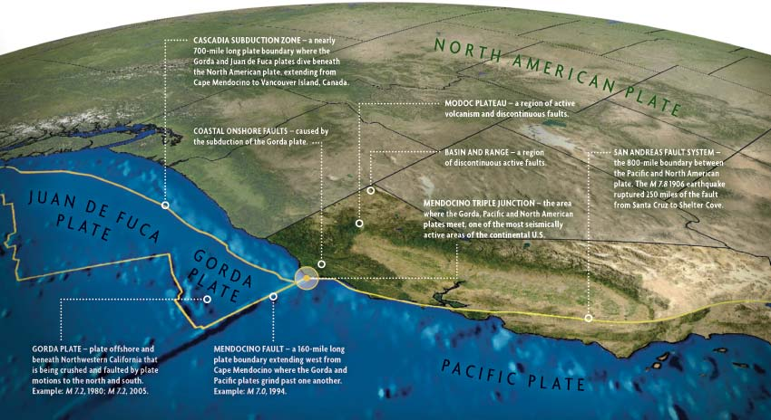

The influence of earthquakes on one Californian's upbringing
Amelia Ayoob
I grew up in coastal Northern California, where adults talked amongst themselves about the inevitable “big one." To my kid ears, "the big one" would be a catastrophic earthquake that would doom us all, and it was really only a matter of time. My lived experience, however, consisted of only a few notable earthquakes interspersed with small tremors. This visual essay draws upon U.S. Geological Survey data, local academic and new sources, and personal experience to explore the physical and cultural influence of earthquakes in Humboldt County, California from 1993 to 2012.
Northern California is one of the most seismically active regions in the U.S.

"Most earthquakes occur at or near plate boundaries," and we have a lot of them. Source: Living on Shakey Ground
My hometown is located near the Mendocino Triple Junction, the Gorda Plate, and the Cascadia Subduction Zone, making it susceptible to severly damaging quakes in the magnitude 7.0 - 9.0 range. Since Humboldt County is on the coast, tsunamis could also result from seismic activity both locally and as far away as Japan (other than that, it's a great place to live!). While the number of earthquakes could vary widely from month to month, they were a near constant presence. My dataset included earthquakes for nearly every month between 1993 and 2012.
Most years saw hundreds of earthquakes
We experienced an average 505 earthquakes per year (with a median of 419).
Which accumulated into thousands
Annual totals ranged from 1,082 (in 1993) to 331 (in 2003) with a total 10,091 earthquakes recorded over the 19 years I lived in the area full time.
Effects were not limited to dry land
Since Humboldt County is coastal, many of the earthquakes that affect us happen offshore. This was the case for the most significant earhtquake in the area in the past decade, a 6.5 magnitude west of the city of Eureka.
Earthquakes were happening at all hours
Despite a general awareness that earthquakes were common I didn't feel that many. I thought perhaps I slept through a lot of them; however the earthquakes recorded during my 19 year timeframe were distributed remarkably evenly over every hour of the day. I was awake for an estimated 63% of those 10,091 earthquakes - nearly 2/3 of the total.
But most went unnoticed
Out of the 9,877 earthquake records that included magnitude data, only 5% were large enough to be felt! Additionally, 85% of the earthquakes that were potentially large enough to be felt were below a magnitude 4.0.
So, where IS "the big one"?
According to local expert Dr. Lori Dengler, the big one is "relative." For some who have lived in California for decades, maybe it's already happened. Others may be expecting that magnitude 8.0 - 9.0 quake I worried about as a kid. Dr. Dengler notes, however, that the next "big one" is likely to be an earthquake falling in the much more common 6.5 - 7.2 range. In Humboldt County, the most impactful earthquakes in the past 30 years - in 1992 and 2010 - fell within that range. While larger earthquakes have been infrequent in the scheme of one Californian's lifetime, past earthquakes and the likelihood of more have spurred local and state-wide awareness raising and preparation initiatives that will be crucial if and when the next one hits.